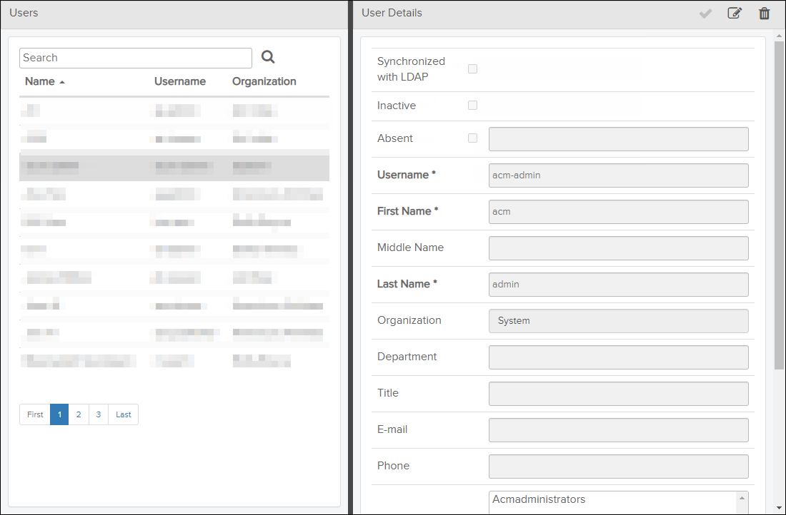

If your user role has Read permission for the
Users privilege, you can access the Users page
by clicking the  Users icon on the header bar.
Users icon on the header bar.
- set the user as synchronized with LDAP (refer to Table 2)
- set the user as inactive (refer to Table 2)
- delete the user (refer to Delete User)
- set the user as absent (refer to Set a User to Absent).
- change his or her organization (refer to Change Organization for a User)
- for Pinpoint Standalone, manage his or her access keys (refer to Managing User Access Keys)
- Users (left side): Lists all users available in the system and allows you to search for users.
- User Details (right side): Shows detailed information about a selected user.

Users Page
The table below describes the fields in the Users section.
| Component | Description |
|---|---|
| Search field and |
Type text in this field and click the The search is not case sensitive and has support for "*" and "%" wild cards. A hidden "%" wild card is automatically applied in front of and behind the entered text. This means that a search for "test" returns "tests" and "tester" in addition to the actual search word. You can also use the "*" or "%" wild card to replace characters in the search word. A search for "Lu*y" will return both "Lusy" and "Lucy". The number of users found in a search is displayed in footer. |
| Users list |
The user list shows all users registered in the system. When you select a user in the list, you will see detailed information about him or her in the User Details section on the right side. If the list contains more entries than can fit into one page, the list is paged and you can navigate between the pages using the navigation buttons below the list. The list is by default sorted by Name, but you can change the sorting by clicking on the column headers. This list cannot be modified in Access Control Manager. |
The table below describes the fields in the User Details section.
| Component | Description |
|---|---|
| Click this icon to save changes in User Details. | |
| Click the Note: It is only possible to change the Organization field. All other
fields belongs to the LDAP server and must be updated there.
|
|
| Click this icon to delete the selected user. Refer to Delete User. | |
| Synchronized with LDAP checkbox | Activate this checkbox to set the selected user as synchronized with LDAP. |
| Inactive checkbox | Activate this checkbox to set the selected user as inactive. |
| Absent checkbox and field |
Use this check box and field to set the selected user as absent. Refer to Set a User to Absent. |
| Username field (Required) | The username of the selected user. This field cannot be modified in Access Control Manager. |
| First Name field (Required) | First name of the selected user. This field cannot be modified in Access Control Manager. |
| Middle Name field | Middle name of the selected user. This field cannot be modified in Access Control Manager. |
| Last Name field (Required) | Last name of the selected user. This field cannot be modified in Access Control Manager. |
| Organization field | The organization registered for the selected user. Refer to Change Organization for a User. |
| Title field | Title of the selected user. This field cannot be modified in Access Control Manager. |
| E-Mail field | E-Mail address to the selected user. This field cannot be modified in Access Control Manager. |
| Phone field | Phone number to the selected user. This field cannot be modified in Access Control Manager.. |
| User role(s) list | The user roles that the selected user is a member of. The roles the user belongs to can be modified with the User Roles page. Refer to Edit User Group / User Role. |
| User group(s) list | The user groups that the selected user is a member of. The groups the user belongs to can be modified with the User Groups page. Refer to Edit User Group / User Role. |